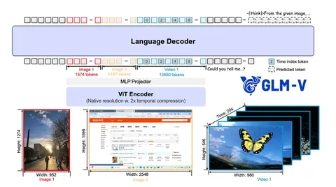
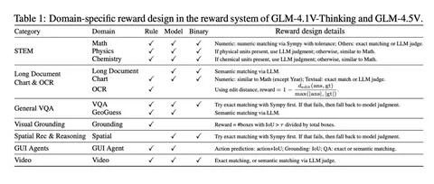

Сегодня разберём статью о том, как с помощью reinforcement learning (RL) и curriculum sampling обучить сильную визуально-языковую модель (VLM), опережающую аналоги в опенсорс-бенчмарках. Именно такой подход помог создать GLM-4.5V.
Авторы позиционируют GLM‑4.5V как одну из лучших открытых моделей для широкого круга задач: работа с длинными документами, агентный режим, видеоанализ, OCR и графика, генерация кода, STEM и VQA.
Архитектурно GLM‑4.5V близка к современным VLM и во многом напоминает Qwen2‑VL. Модель состоит из трёх ключевых компонентов: визуального энкодера, MLP‑адаптера и LLM‑декодера (MoE 12А109B). Для кодирования визуальных токенов в ViT применяются 2D‑RoPE и интерполяция абсолютных позиций для произвольных разрешений и экстремальных аспект‑ratios. А в LLM используются 3D‑RoPE и временные индексы для видео, что улучшает моделирование темпоральных зависимостей.
Модель предобучали с нуля на академических текстовых корпусах и больших, разнообразных наборах изображений. Для этого понадобилось свыше 10B пар «изображение + текст», отфильтрованных при помощи CLIP‑подобной модели. Чтобы минимизировать смещения, все операции с данными сопровождались сбором статистик: нормировали частоты в корпусе, следили за распределениями и итеративно улучшали собственный captioning‑пайплайн. Итоговый объём претренировочного датасета составил около 2T токенов.
Крупный претрейн и аккуратно собранный корпус для SFT с чётко заданным форматом ответов создали прочную основу для RL‑стадии. Качество модели оценивали через многократное сэмплирование предсказаний и подсчёт PASS@k на разных бенчмарках — это позволило заранее понимать, как система проявит себя после RL.
Главное новшество — мультидоменный онлайн‑RL с продуманной reward‑системой на базе GRPO. Авторы валидировали отдельные критерии оценки для каждого домена, контролировали риск reward hacking и балансировали сложность примеров. Такой подход позволил получить хорошее межпредметное обобщение: обучение в одном домене повышало качество в других, а совместное обучение сразу в нескольких — приводило к ещё большим улучшениям в каждом из них.
Второе важное нововведение — curriculum sampling: отбор наиболее полезных примеров для обучения. Подготовка выборки (RLCS) и её динамическое расширение реализованы с помощью экспоненциальной скользящей средней (EMA), что стабилизирует траекторию обучения и ускоряет сходимость модели.
По итогам проверки на 42 публичных бенчмарках GLM‑4.5V обеспечивает высокие результаты почти во всех задачах среди открытых моделей сопоставимого размера и демонстрирует конкурентоспособность по отношению к закрытым решениям.
Познакомиться с GLM-4.5V можно на github.
Разбор подготовил
CV Time
